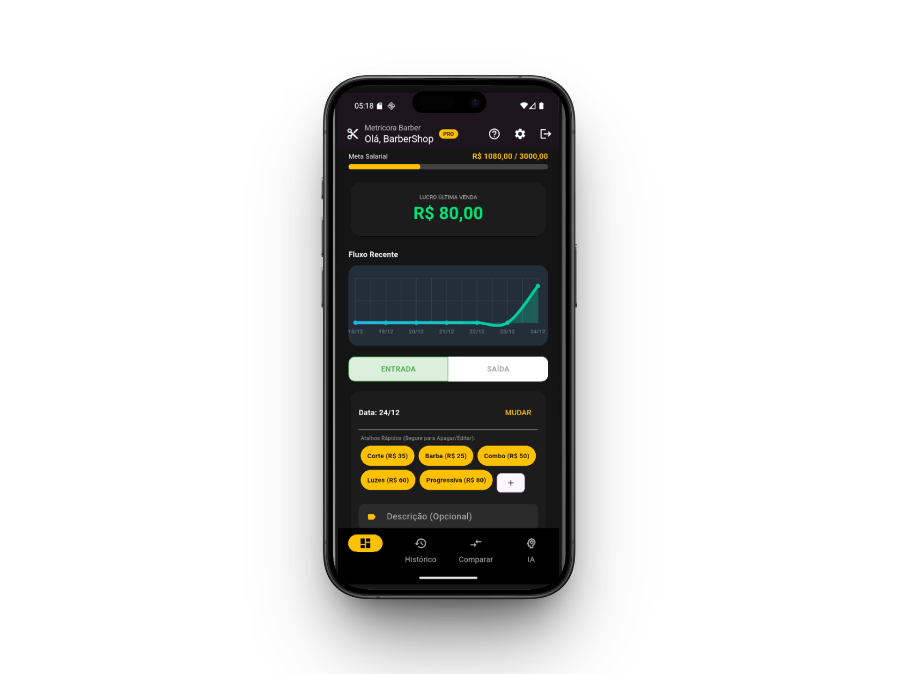

Organize o financeiro do seu salão ou barbearia com precisão de elite.
Muitos profissionais trabalham 12 horas por dia, vêem o caixa girar, mas não sabem o tamanho do lucro líquido. A versão 1.0.9 traz backup na nuvem e autenticação por e-mail, separando finalmente o dinheiro do seu negócio das suas contas pessoais.
1. Fim da mistura de contas
Retirar dinheiro do caixa para boletos pessoais sem registro corrói o seu lucro. O Metricora v1.0.9 agora exige a classificação correta: Despesa Operacional vs Retirada de Sócio.
2. Performance Real
Chega de calcular comissões e custos na calculadora. O app processa o valor do serviço, deduz o custo operacional e entrega seu lucro real instantaneamente.
3. Gestão Offline-First com Backup na Nuvem
Seu financeiro não pode depender de Wi-Fi. O Metricora funciona 100% offline e agora sincroniza seus dados com a nuvem em 1 toque, garantindo que você nunca perca um registro sequer.

Painel de controle financeiro v1.0.9
Assuma o controle total.
Junte-se aos profissionais que pararam de pagar para trabalhar e começaram a escalar o lucro.
BAIXAR MÉTRICORA v1.0.9🔒 Binário Ofuscado | Segurança contra engenharia reversa